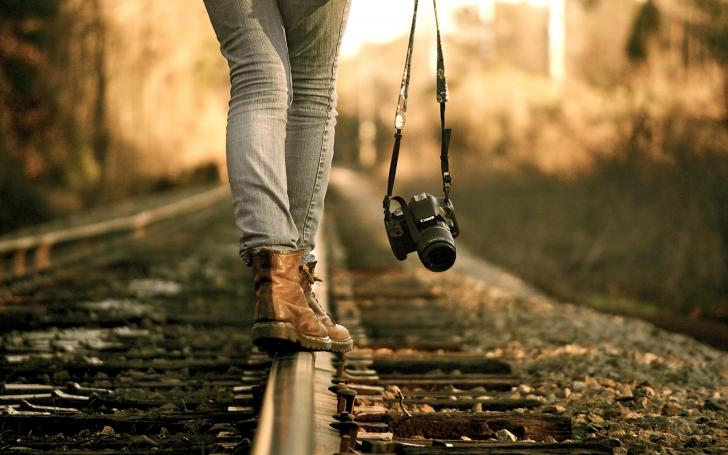

Interests


Hobbies are of different kinds and it is one that you would love and enjoy doing the most. Of all the hobbies that we see and hear, I love Photography the best. I mostly like to capture the beauty of nature.I make the maid relax.
After entering university I had a chance to participate in a competition called manjusawa. I could win the second place photography competition. hotography has made my senses keen and my imagination sharp.I have developed a wonderful aesthetic sense.I have my albums of all these photographs.